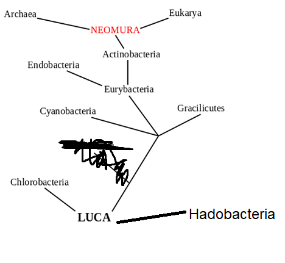

אתה לא צריך להסיק כלום, כל אחד מחובר למי שלפניו. ועל פי זה אתה יודע (זה בדיוק העניין של התרגיל)
יכול להיות שלא הבנת אותי נכון.
בתיאור של העץ:
Chlorobacteria -> LUCA
Hadobacteria -> LUCA
Cynaobacteria -> LUCA
Gracilicutes -> LUCA
Eurybacteria -> LUCA
Endobacteria -> Eurybacteria
Actinobacteria -> Eurybacteria
Neomura -> Actinobacteria
Eukarya -> Neomura
Archaea -> Neomura
אי אפשר לדעת ש-Cholorobacteria נמצא על “ענף” נפרד מאשר לדוגמא Hadobacteria.
זה אומר שלא ניתן להסיק את המבנה כמו שהוא בציור - כלומר לא ניתן לדעת שהמרחק בין Chlorobacteria לבין Eukarya הוא 4 אבל המרחק בין Hadobacteria לבין Eukarya הוא 3.
אם רוצים לתאר את המינים בעזרת מבנה זה, ולחשב את המרחק, זה אומר שבהכרח הם אמורים לשבת על אותו ענף, מאחר שלא ניתן להפריד פה למקרים עם מבנה הנתונים הזה
אם אתה יודע מי ה"אבא" של כל אחד אתה יכול להרכיב את העץ… אחרי שתרכיב את העץ תוכל לבדוק.
זה בדיוק מה שצריך לעשות בתרגיל הזה.
אבל תמיד מחפשים את האב הקדמון המשותף, בדוגמא הזו יש את LUCA ביניהם. אז לפי מה שאני מבינה זה שתי פסיעות…? בכל מקרה 0 זה לא כל כך הגיוני…

זאת דוגמה למה שהתכוונתי.
לפי מבנה הנתונים שהוגדר המצב הזה גם אפשרי, כך ש- Eukarya נמצא במרחק 4 פסיעות גם מ-Hadobacteria.
אי אפשר לדעת במבנה הנתונים שהוגדר אם המין יוצא מענף נפרד או מאותו ענף כמו מינים אחרים
אם המרחק ממך למישהו הוא בלי מינים בדרך זה אומר שהקשר ביניכם ישיר - ולכן מיוצג כ 0.
הבנתי למה אתה מתכוון כלומר על מצב בו יש שני מינים שמחוברים לאותו אב, פעם ששניהם תחתיו ופעם ששניהם לצידיו.
ואז בעצם אי אפשר להבדיל בין אם הם באותו הצד או בשני צדדים שונים.
זו באמת בעיה 
הייתי מבינה שהמרחק הוא 0 בין LUCA לבין Hadobacteria כי אז אין באמת מינים באמצע.
אבל בין Gracilicutes לבין Hadobacteria? יש עוד מין באמצע, צריך להיות מרחק 1 לא?
לא כי הם יושבים בלי מין ביניהם, הם על אותו “קו”. אין ביניהם מין מפריד.
טוב נחכה לתשובה מהמאסטר @Yam לגבי ההגדרה של מבנה הנתונים.
בכל מקרה אני חושב שכדי לתקן את זה, למרות שזה סותר מעט את העץ - כל המין יוצאים מאותו ענף של “אבא שלהם”
2 לייקים
בעצם כדי ליישב את הסתירה הזו צריך שכל מי שיוצא מאב מסויים, יחשב מרחק 0 ולא יחשב שיש מרחק ביניהם ואז אם הם יוצאים מאותו ענף או לא זה לא משנה את הספירה
הבעיה נוצרת בין מצבים כאלו לדוגמא:
{kind=link}
בין כל המצבים שיוצאים ממין כלשהו.
גם מ-Cyanobacteria ו- Eurybacteria.
גם בין Endobacteria ו- Actinobacteria שיוצאים מ-Eurybacteria.
גם בין Eukarya ו- Archea שיוצאים מ-Neomura.
פשוט צריך הגדרה לעץ הזה - כל מין אם הוא יוצא מענף נפרד או מאותו ענף.
בסופו של דבר יצא עץ שונה, אך חייבים לתת מענה, כי אחרת לא יהיה ניתן לדעת איך לגשת לשאלה
אמנם זה מצויר ככה, אבל ממבנה הנתונים (וגם אגב בציור!!) עולה ששני המינים שמסומנים באדום יוצאים מהאב הקדמון המשותף LUCA. באותה מידה זה היה יכול להראות ככה:
בדרך כלל מודדים מרחק של כל אחד מהמינים מהאב הקדמון המשותף האחרון כדי להבין מה המרחק בין שני המינים.
{kind=link}
לייק 1
הבעיה המרכזית היא בדוגמא שניתנה, כי ממנה מסתמן שמרחק בין שניים שיצאו מאותו אב - המרחק מהם הוא 1 במידה ולא יצאו מאותו הענף - ואחרת המרחק הוא 0.
אני יכול להבין את זה במציאות אבל זה מצריך ארגון אחר של הנתונים בקובץ, או לכל היותר לשנות את ההגדרה לזה שכל מי שיוצא מאב זהה בלי מינים בדרך הוא במרחק 0 ממנו.
אני יכול לומר לך שנתקלתי בבעיות דומות כשפתרתי את הסעיף.
על כן החלטתי לייצר התניה עבור מקרים שבהם יש אב משותף (0), ומקרים שבהם אין אב משותף.
אני ממליץ לנסות ולהבהיר את העניין למי שצריך בסעיף עצמו, יחד עם זאת - אני גם בעד להפעיל את הראש ולייצר קוד שעונה על מה שנתבקשנו, גם אם היא לא מורכבת מתנאי אחד 
כן אבל אב משותף 0 זה בדיוק מה שנאמר, שאין בעיה שזה יהיה 0, אבל זה לא מה שמוגדר בודוגמאות.
בדוגמאות לפעמים אבל משותף יכול להיות 0 ולפעמים 1 ואין לך איך לדעת כי במסד נתונים מופיע לאלו ולאלו חיבור לאבא וזהו בעצם
כך שאתה לא יכול לדעת באיזה צד הם (גם אם אתה בודק את מי שבא אחריהם ביחס לאבא הזה אתה לא יכול לדעת)
אתה מתייחס פה למקרה הספציפי שבדוגמא ועל כן אתה “מפעיל פה את הראש” יותר ממה שצריך.
אל תנסה להתחכם כי תבין את המצב - בהינתן ממסד נתונים כלשהו אינך יכול לדעת מהם הענפים המדוייקים של העץ.
תאמין לי שגם בלי ניסיון ההתניות שלך יהיו מספיק תנאים בקוד.
אני מבין את מה ששניכם אומרים ומסכים! נתתי תנאי כדי שיאפשר את הדוגמה או דומות לה וזה באמת יצר מצב שכאשר אין אב משותף ישיר, האב המשותף נספר וזה הופך את הספירה ללא קוהרנטית עבור כל המצבים.
בואו נחכה להתייחסות מהסגל כדי שנבהיר את הסוגיה.
וכמובן שרק טענתי ש״over-thinking” הוא חיובי למתכנתים מתחילים.
להלן התשובה של ים לנושא:
היי, תודה לכם על הדיון ותשומת הלב. אתם צודקים וכשלתי בבדיקת מקרי הקצה של התרגיל
אקבל, כמובן, את כל הפתרונות שנבעו מהנוסח הקודם של השאלה.
תשובתי לתיקון (כמו שהבנתם כבר בעצמכם בתגובות קודמות של הנושא) בלינק שצירף אביעד.
2 לייקים